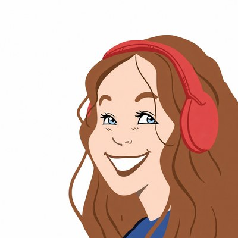
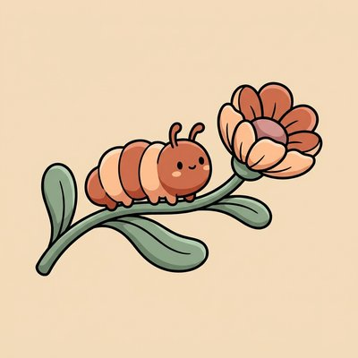
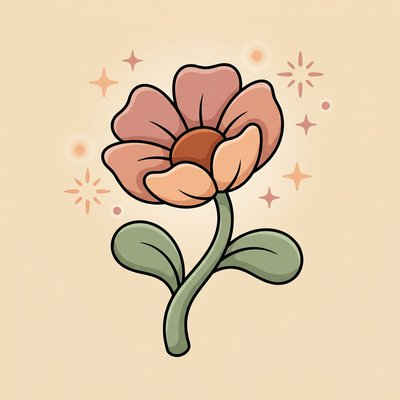

Médico de profesión, curiosa de oficio
Soy Sofi, médico y sanadora — lo segundo me lo gané después, buscando afuera de la medicina lo que la facultad no me enseñó: a acompañar a alguien hasta que florezca.
Este es el recorrido, contado por mí. Ahí abajo, en orden.

Cómo llegué hasta acá
Un camino que parte en la medicina, pasa por el micrófono y termina en un consultorio lleno de flores.
-
La infancia
Una cuncunita en el patio

En el jardín, con los niños gritando y corriendo, mi mundo se detenía en una cuncunita que cruzaba el patio, lenta y hermosa — hasta que un niño la aplastó y, de un instante a otro, ya no estaba. Nunca he sabido explicar bien cómo me marcó ese momento de belleza y pérdida. Crecí escuchando a mujeres sabias hablar de hierbas y autocuidado, y viendo llegar en vacaciones, en el antiguo San Fernando —un pueblo hermoso de la sexta región—, a los doctores de campo que traían consuelo. Ahí decidí que sería médico.
-
La facultad
La medicina
Un viaje intenso, de mucho desarrollo y de mucha desilusión: lo que yo buscaba en medicina no estaba ahí. La Universidad de Chile y el Hospital San Juan de Dios me formaron y me dieron herramientas hermosas, pero no me enseñaron a sanar a nadie — me enseñaron un idioma. Me gradué con distinción y les debo gratitud, aunque lo que yo buscaba —acompañar a alguien hasta que diera esa flor que traemos dentro— eso no lo encontré ahí.
-
La búsqueda
Las flores y lo demás
Nunca solté las ganas de conocer todas las herramientas: lo de mis abuelas, la medicina energética, el reiki, la acupuntura, las flores de Bach y después las Bush australianas, californianas y chilenas. Cuando por fin tuve todo ese conocimiento integrado, entendí algo distinto: sanarse es tarea de cada persona. Lo que yo podía hacer era acercarme, con humildad, a acompañar ese camino.
-
El micrófono
La Consulta de la Sofi
En paralelo empecé a conversar de todo esto por radio y por internet, sin solemnidad y con harto humor. Más de 160 capítulos después, sigue siendo gratis para quien quiera escuchar — así se llama este sitio por algo.
-
Lo propio
ADABA

Con todo lo aprendido armé un método propio: ADABA, que significa movimiento de la mente profunda. Con conversación, medicinas vibracionales, libros, cariño, baile o canto — lo que busca es despertar el interior de cada persona, ese lugar donde ocurren los milagros, para que cada una brote desde sí misma hacia lo mejor de sí misma.
-
Hoy
La consulta
293 sesiones evaluadas con nota 5,0 en Encuadrado. Online o presencial, sigue siendo una conversación entre dos personas.
¿Nos vemos?
Si algo de esto te hizo sentido, hay dos formas de seguir: agendando una hora o escuchando un rato.